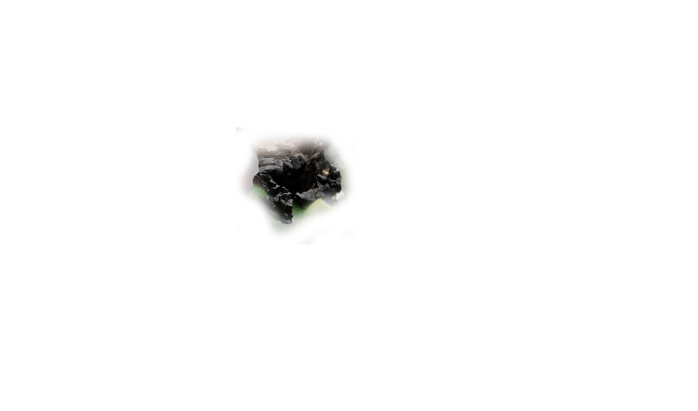
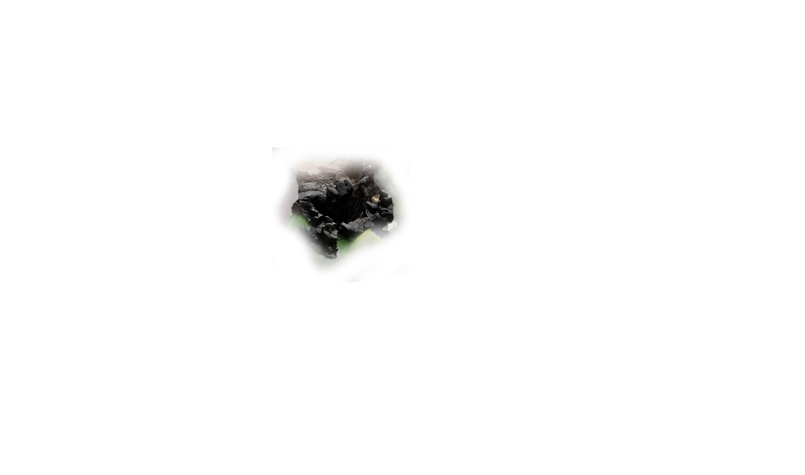
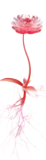
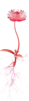
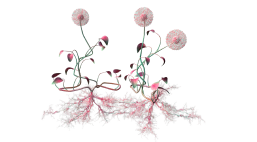
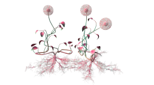

FOCUS MONONOVOUSthe creative species found in “The Depths”
21% of survey participants are Focus Mononovous
You have a 75% affinity with most Focus Mononovous

SOLO NOCTUSthe creative species found in “Luna”
4% of survey participants are Solo Noctus
You have a xx% affinity with most Solo Noctus
SUI INSPIRAthe creative species found in “The Alcove”
10% of survey participants are Sui Inspira
You have a xx% affinity with most Sui Inspira
 

M ONO ROUTINUSthe creative species found in “Canyonlands”
21% of survey participants are Mono Routinus
You have a 75% affinity with most Mono Routinus
 

SOCIALIS ADVENTUROUSthe creative species found in Meadowland
19% of survey participants are Socialis Adventurous
You have a 75% affinity with most Socialis Adventurous


YOLO CHAOTISthe creative species found in The Alpine
20% of survey participants are Yolo Chaotis
You have a 75% affinity with most Yolo Chaotis

NOVO GREGARIOUSthe creative species found in The Jungle
10% of survey participants are Novo Gregarious
You have a 75% affinity with most Novo Gregarious